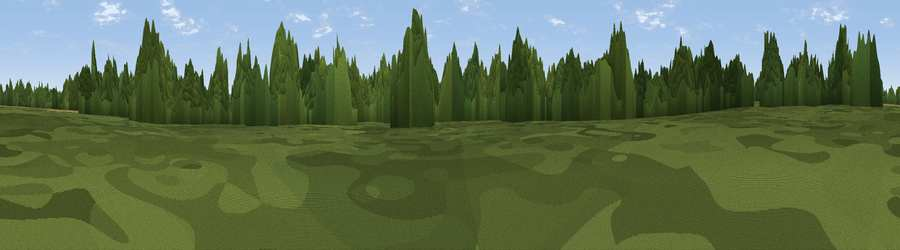

Wigdell Peak
#44828 in England · top 86% of its area beats it · near BradleyThe view, rendered

A 360° render of this exact spot computed from the terrain model, tree cover and land cover — summer colours, afternoon light, calibrated against photographs of famous viewpoints. Real trees, hedges and buildings will differ in detail.
The panorama
Grey silhouette: terrain skyline in each direction (720 bearings, Earth curvature and refraction included). Dashed green: skyline with trees (+15 m) and buildings (+8 m) as obstacles. Blue strip: how far the ground is visible on each bearing.
Where the view opens
Wedge length = distance to the farthest visible ground on that bearing (vegetation-aware). Rings at 10, 25 and 50 km.
What fills the view
47% woodland · 40% cropland · 12% grassland · 2% built-up
Angular shares of the visible panorama (visual magnitude), not map area. Landscape diversity 0.45 (0–1 Shannon).
Key numbers
More beautiful places nearby
The staircase of upgrades: each row has a higher view potential than everything closer. Driving times are estimates from straight-line distance, calibrated against real road routing — check an actual route before setting out.
| Place | Direction | Drive | Score |
|---|---|---|---|
| Bradley Hill | NW · 2 km | ~4 min | 26.6 |
| Viewpoint near Preston Candover | WNW · 4 km | ~9 min | 31.5 |
| Wivelrod Hill | SE · 4 km | ~10 min | 43.5 |
| Viewpoint near Cliddesden | N · 6 km | ~13 min | 50.7 |
| Viewpoint near Dummer | NW · 6 km | ~13 min | 50.9 |
| Viewpoint near Holybourne | E · 7 km | ~15 min | 51.2 |
| Wick Hill | ESE · 12 km | ~22 min | 52.4 |
| Viewpoint near Selborne | SE · 12 km | ~23 min | 52.7 |
51.17449, -1.06665 · source: osm peak · position refined by local search. Computed location — check access rights before visiting.